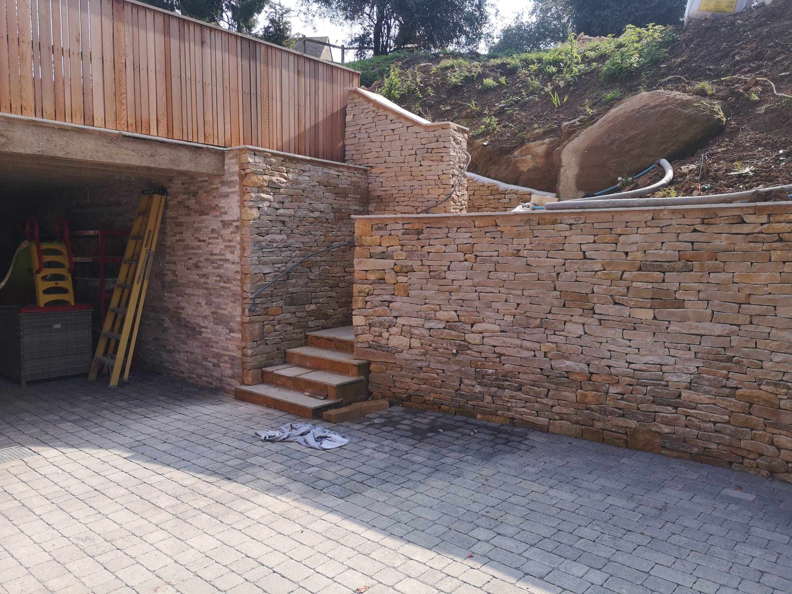
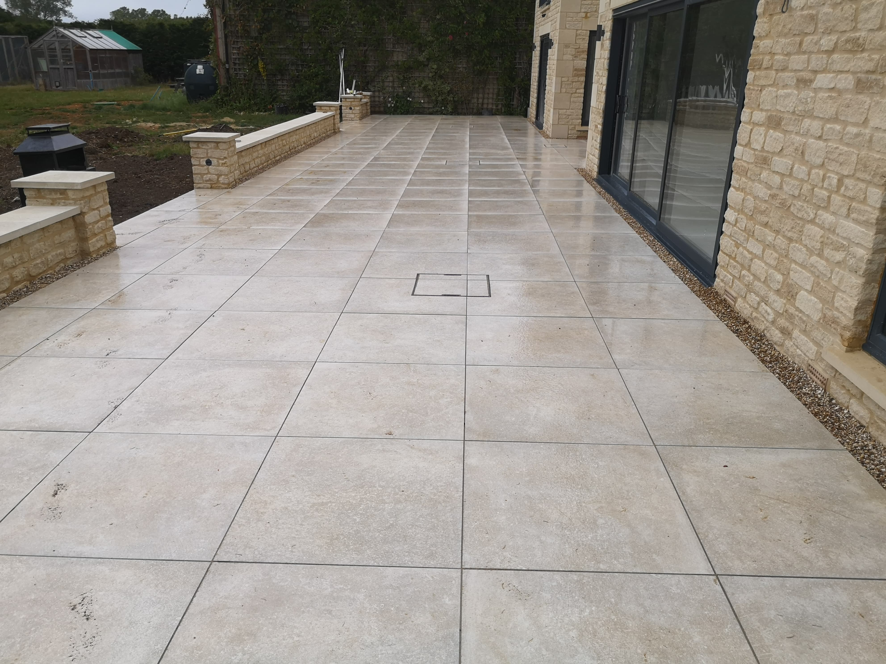

Dry stone walling

Landscaping

Bespoke work
Traditional boundaries is a North Cotswolds based landscaping company that specialises in both landscaping and dry stone walling, although we have had many unique projects and continue to get asked to undertake very specific requests that will also be very individual to that project.
Whilst all of our projects are unique, we do have many similar requests and as such have built up a wealth of knowledge on the following areas of work
Dry stone walling
Landscaping
Bespoke work
Being a Cotswolds based company, it only makes sense that we started off as a dry stone walling company.
Whilst there are so many options when it comes to exactly what you might want as a wall, boundary or border;
we believe that, in most cases, a dry stone wall will always be one of your best options.
Not only can we build you a fantastic dry stone wall, but we can assist with out expert knowledge on the different
kinds of stone that you might want use, how the different kinds of dry stone wall would fit with your vision and
just generally assisting in the decision making process for your perfect garden.
We also offer a wide range of landscaping services, such as patios, fencing and wet stone walls to name a few. The years of experience and wealth of knowledge we posses allow us to reach as close to perfection as possible to ensure that you love the space you have created in your home.
Whilst many requests we get tend to be similar to something we have done in the past, we pride ourselves on being
able to create exactly what you want for your garden. This inevitably means that we occasionally have to complete
bespoke work that can be different to other things we have done in the past.
However we love this kind of work as it allows us to provide you with something unique and personal, and normally
leads to similar work in the future. An example of this would be our bespoke gate example on our gallery page,
whilst this was the first bespoke gate we had done of this sort, we achieved a fantastic result by closely working
with the customer to achieve exactly what they wanted.
We truly believe that we can help you with any landscaping need, for any enquiries please send us a message with our
contact us form.